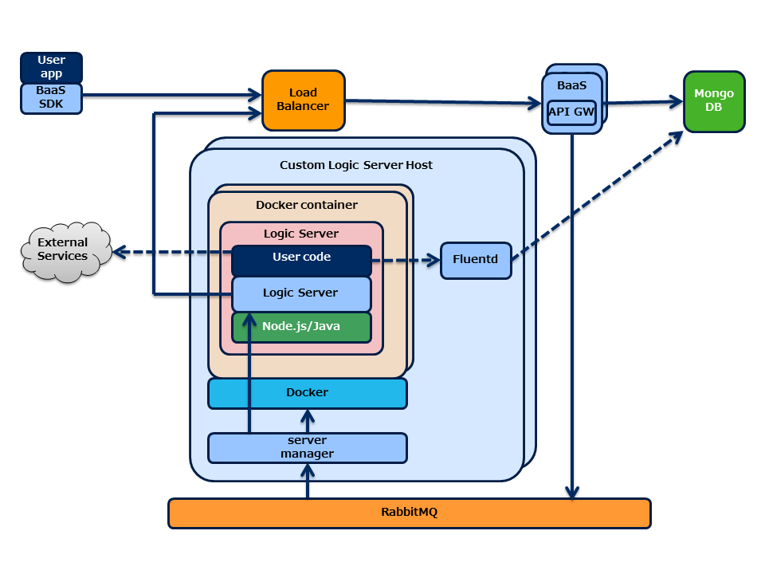

3. システム構成¶
3.1. 構成¶
Cloud Functionsサーバのシステム構成は以下のようになります。
{kind=link}
Cloud Functions呼び出しは以下のような順序で実行されます。
- クライアントアプリからモバイルバックエンド基盤サーバ(図中の “Nebula”) に対し REST API でCloud Functions実行要求を行います。
- モバイルバックエンド基盤サーバは、RabbitMQ 経由でサーバマネージャに実行要求を転送します。
- サーバマネージャは、Docker コンテナを起動し、コンテナ内で動作するロジックサーバ(図中の “Node Logic Server”)に HTTP で実行要求を送ります。
- ロジックサーバはユーザコードを呼び出し処理を実行し、応答を返します。
- 応答は RabbitMQ 経由でモバイルバックエンド基盤サーバに返却され、クライアントアプリまで返却されます。
3.1.1. モバイルバックエンド基盤サーバ¶
モバイルバックエンド基盤サーバは、メッセージキュー経由でCloud Functionsサーバへの各種指示を行います。 具体的には以下の指示を行います。
- Cloud Functionsの実行指示
- 設定情報(コード、ファンクションなど)の更新通知
また、クライアントからの登録受付や送信リクエスト受け付けもモバイルバックエンド基盤サーバが行います。
3.1.3. サーバマネージャ¶
サーバマネージャは、モバイルバックエンド基盤サーバから受け取ったユーザコード実行要求を ロジックサーバに転送しユーザコードを実行します。
ロジックサーバはデフォルトでは Docker コンテナ内で動作するようになっており、 サーバマネージャが Docker コンテナの起動を行います。 また、設定によっては Docker なしで起動することも可能です。
サーバマネージャは、以下の機能を持ちます。
- メッセージキューを使用したリクエストの受付・応答。
- Docker コンテナのライフサイクル管理 (起動・停止)
- ロジックサーバの呼び出し
Attention
モバイルバックエンド基盤 v5 の「コンテナマネージャ」は、v6 で「サーバマネージャ」に 名称変更されました。
3.1.4. ロジックサーバ¶
ロジックサーバは、ユーザコードを実行する HTTP サーバです。
ロジックサーバはデフォルトでは Docker コンテナ内で起動し、サーバマネージャからのコード実行要求に従い ユーザコードを呼び出し、結果を返却します。
3.1.5. Fluentd¶
ユーザコードが出力したログは、fluentd に集約され、MongoDB に保存されます。
MongoDB に保存したログは、モバイルバックエンド基盤サーバ側で取得することができます。
3.2. クラスタ構成¶
BaaS API サーバ、サーバマネージャはそれぞれ複数台構成としスケールアウトすることができます。
APIサーバとサーバマネージャ間の通信は RabbitMQ が行います。 ロードバランスは RabbitMQ 側で行います(メッセージはラウンドロビンでサーバマネージャ に配信されます)。